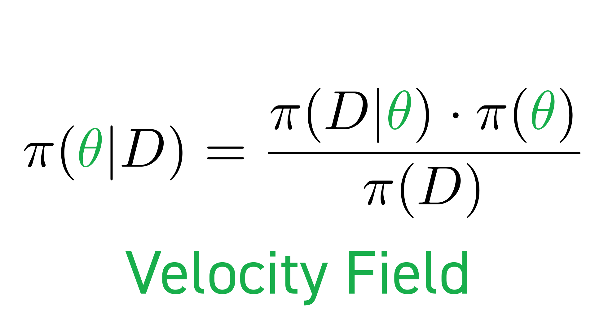
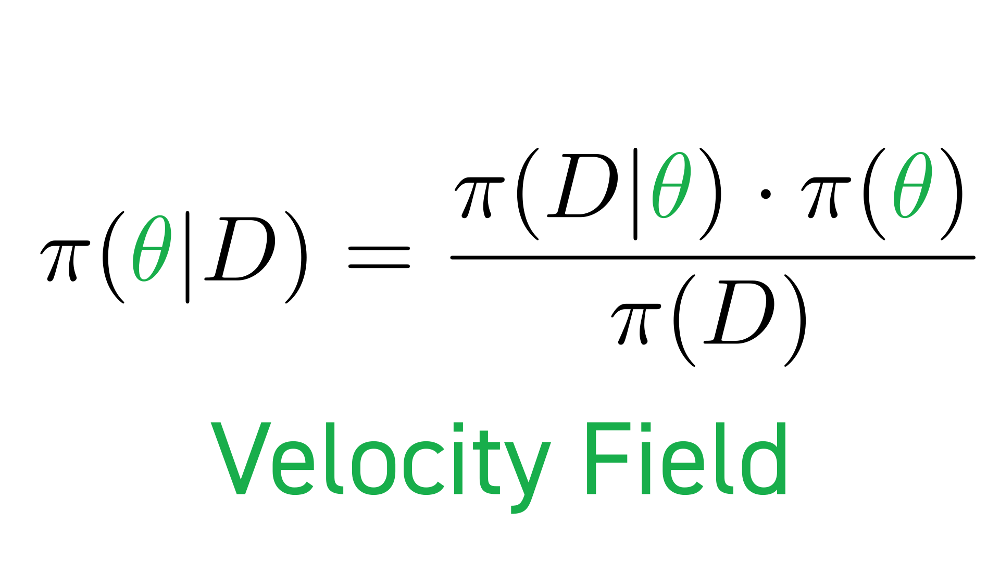
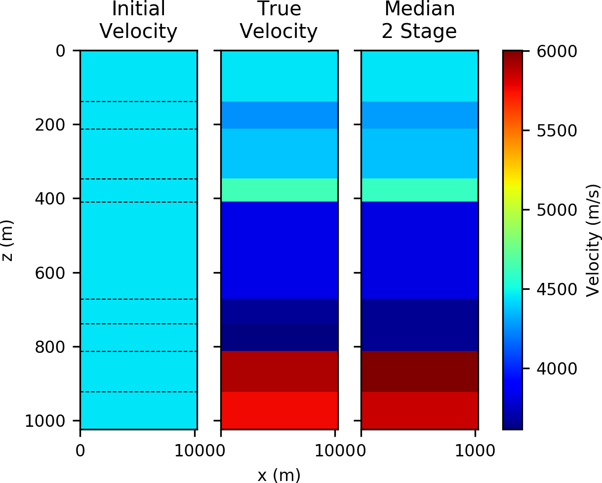
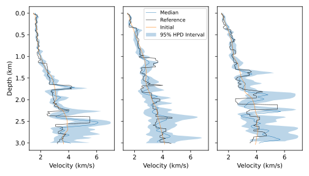
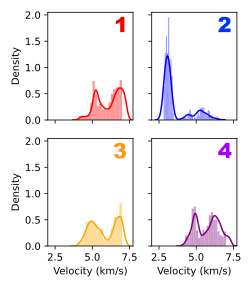

Computationally efficient methods for uncertainty
quantification in seismic inversion
Georgia K. Stuart
The Department of Mathematical Sciences
The University of Texas at Dallas
28 September 2020
The University of Texas at Dallas
28 September 2020
Outline

Exploration Seismology
- A seismic disturbance.
- Seismic waves propagating through the subsurface.
- Reflected seismic waves created by the change in material.
- Geophones that record the direct (red) and reflected (blue) waves.
Wave Data

Full Waveform Inversion (FWI)
Uncertainty Quantification and FWI
- Traditional FWI methods result in a single velocity field.
- UQ methods result in distributions of velocity fields.
- UQ indicates where we have more or less certainty about the estimate from FWI.


Bayes' Rule
 



Markov chain Monte Carlo (MCMC)
- Deterministic approaches to Bayesian FWI require many assumptions.
- Stochastic approaches require fewer assumptions.
- Markov chain Monte Carlo methods sample from the posterior distribution without assumptions on the shape of the distribution.
Markov chain Monte Carlo (MCMC)

The Problem with MCMC
How can we reduce the computational cost
of MCMC methods
for FWI?
Strategies
Two-Stage MCMC
Choice of Filters
Operator Upscaling
- Modeling wave propagation can be computationally expensive.
- We use the 2D constant-density acoustic wave equation \[\frac{1}{c^2(x,z)}\frac{\partial^2 p}{\partial t^2} - \nabla p = f\]
- Operator upscaling1 decomposes the
solution into
two parts:
- Fine grid problem on independent subdomains
- Small coarse grid problem over the whole domain
- In this upscaling technique we do NOT upscale the model.
(1) Vdovina et al. (2005), Korostyshevskaya and
Minkoff (2006), Vdovina and Minkoff (2008)
Operator Upscaling
- Write the acoustic wave equation as a system in space by introducing acceleration, \(\vec{v}\) \[\begin{align} \vec{v} &= - \nabla p \\ \frac{1}{c^2} \frac{\partial^2p}{\partial t^2}&= - \nabla \cdot \vec{v} + f \end{align}\]
- Solve in parallel for fine grid pressure and acceleration over each independent coarse block. No communication is required at this stage.
- Solve for coarse grid acceleration over the whole domain.

upscaling and fine grid correlation

- We see a strong linear relationship between the fine grid relative residuals and the upscaled relative residuals for a layered velocity model.
- This indicates that the upscaling filter is a good surrogate for the fine grid solver.
Results: Two-stage MCMC with Upscaling
Results: Two-stage MCMC with Upscaling

A comparison between one-stage MCMC highest posterior density (HPD) intervals and two-stage MCMC HPD intervals.
- Acceptance rate increased from 10% to 40%.
- Time per sample decreased by 22% (40% in other experiments).
- Time per rejection decreased by 33%.
Results: Two-stage MCMC with Upscaling
Neural Network Filter
Results: Two-stage MCMC with Neural Net

Well log from the Midland, TX basin (blue, courtesy of
Pioneer Natural Resources and 9-layer block (orange).

Flat layered experimental setup (Stuart et al. 2019a)
Results: Two-stage MCMC with Neural Net

The fine grid residual norm vs. neural network filter residual norm with continuous learning.
Results: Two-stage MCMC with Neural Net

The initial, true, and median velocity fields for
the neural net two-stage MCMC experiment. The dashed lines in the initial velocity field mark the
positions of pre-set interfaces.
- All timings include generating the training set and training the neural network.
- Acceptance rate increased from 29% to 86%.
- Time-per-trial decreased by 65%.
- Time-per-rejection decreased by 84%.
Results: Two-stage MCMC with Neural Net
Trouble: The Random Walk Sampler
- In theory, MCMC will converge to the target distribution.
- In practice, methods based on random walk sampling (RWS) can handle a limited number of unknowns (\(<100\) in our experience)
- RWS produces samples that are highly correlated.
Neal (2011)
The random walk sampler practically limits the number of
unknowns we can use
Hamiltonian Monte Carlo (HMC)
The Hamiltonian
Hamilton's Equations

HMC Flowchart
Problem: Gradient Computation is Expensive!
Two-Stage Hamiltonian Monte Carlo
Neural Network-Enhanced Two-Stage HMC (NNHMC)
Numerical Experiments: NNHMC
Numerical Experiments: NNHMC
Numerical Experiments: NNHMC
HMC requires user-specified parameters
to discretize the
hamiltonian dynamics
The No-U-Turn Sampler (NUTS)
The No-U-Turn Sampler
Numerical Experiment: NUTS
Numerical Experiment: NUTS

Vertical slices with HPD intervals
Numerical Experiment: NUTS


Posterior Distributions
Conclusions
Future Work
Acknowledgements